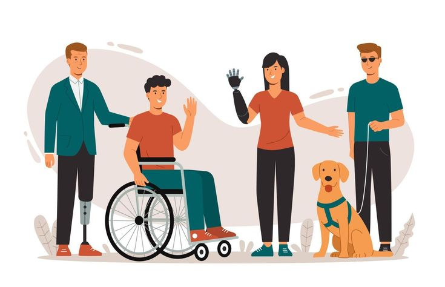
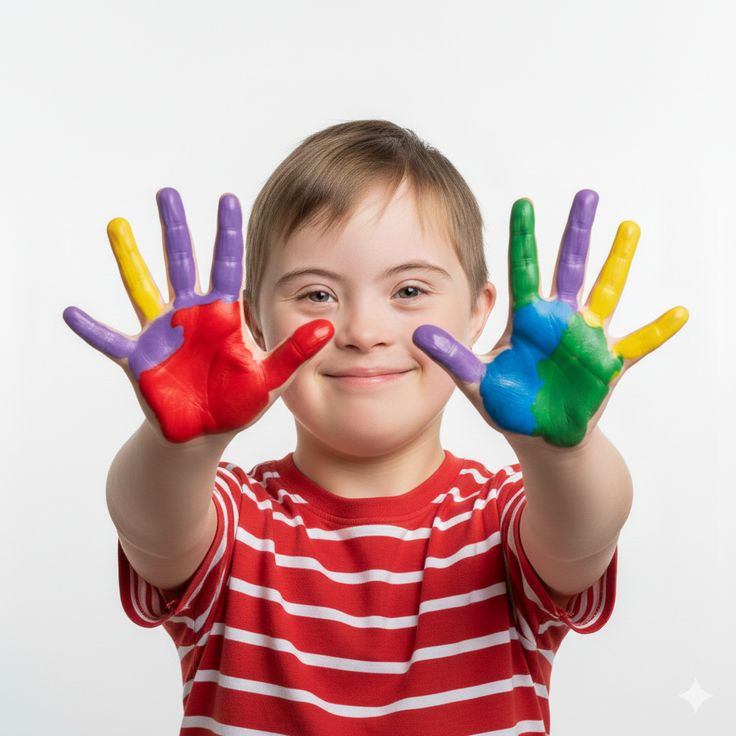

A tecnologia deve ser desenhada para contemplar todas as pessoas.
Uma página verdadeiramente acessível respeita diferentes modos de enxergar, ouvir, compreender e navegar. Com a Inteligência Artificial apoiando o planejamento e a produção de conteúdo, nossa equipe assume o compromisso de garantir uma experiência inclusiva, acolhedora e semanticamente perfeita.
Tecnologia Assistiva e Autonomia Digital
Pessoas cegas ou com baixa visão utilizam leitores de tela para sintetizar informações visuais em áudio ou Braille. A inclusão começa na estrutura HTML limpa: marcadores semânticos e textos alternativos precisos transformam interfaces complexas em pontes de autonomia.
Uso rigoroso do atributo alt informativo e navegação fluida exclusiva por teclado.


Inclusão no Trabalho e Combate ao Preconceito
A inclusão no ambiente de trabalho busca garantir igualdade de oportunidades, respeito e valorização das diferenças, combatendo atitudes preconceituosas e promovendo um espaço onde todos possam participar e contribuir.
Acessibilidade não é caridade; é direito e um catalisador de inovação tecnológica.
O Papel da Inteligência Artificial Responsável
A IA generativa acelera a geração de audiodescrições, legendagem em tempo real e adaptação de interfaces em alto contraste. Contudo, a tecnologia exige supervisão ética humana para evitar vieses e manter o foco nas necessidades reais do usuário.
Uso de IA para automação de roteiros, legendas e ampliação do acesso à informação.

Recursos Multimídia com Transcrição
Vídeo e Podcast produzidos com apoio de ferramentas de IA generativa.
Vídeo: Acessibilidade na Prática
📜 Transcrição Completa do Vídeo ▼
[00:01 - Narração]: A acessibilidade digital ajuda pessoas com diferentes necessidades a utilizar sites e aplicativos.
[00:05 - Descrição visual]: A tela exibe uma pessoa navegando pelo teclado enquanto o foco visível em amarelo percorre os links de menu.
[00:09 - Narração]: Utilizar tags semânticas e bom contraste garante uma experiência sem barreira para tecnologias assistivas.
Podcast: Vozes da Inclusão Digital
Tecnologia para Todos #01
Apresentadora: Mariana
📜 Transcrição Completa do Podcast ▼
Mariana: Olá, boas-vindas ao nosso podcast. Eu sou a Mariana, e hoje vamos fazer uma reflexão profunda sobre um dos temas mais urgentes do nosso tempo: a inclusão e a acessibilidade digital.
Vamos analisar esse cenário a partir de três pilares essenciais para entender como construir um mundo sem barreiras: a sociedade, a tecnologia e o futuro com a inteligência artificial.
Para começar, vamos olhar para a sociedade. Quando analisamos nossas escolas, universidades e o mercado de trabalho, vemos que a inclusão de pessoas com deficiência ainda enfrenta obstáculos gigantescos. Mas onde começa a verdadeira transformação social? Ela começa na mudança de atitude e no combate direto ao preconceito. A inclusão não é sobre fazer um favor ou uma concessão: é sobre garantir direitos fundamentais. Quando uma escola acolhe um estudante neurodivergente ou uma empresa contrata um profissional com deficiência, a sociedade inteira ganha em diversidade e inovação.
Mas, para que essas pessoas permaneçam nesses espaços com dignidade, a acessibilidade precisa ser a base do ambiente, e não um detalhe pensado de última hora. E é exatamente aí que entra o nosso segundo pilar: a tecnologia. Ela atua como uma verdadeira ponte para a autonomia. É através da tecnologia assistiva que uma pessoa cega consegue ler um documento digital por meio de um leitor de tela, que uma pessoa com deficiência motora navega pelo computador usando apenas o movimento dos olhos, ou que uma pessoa surda acompanha conteúdos com tradução em Libras.
Porém, existe o outro lado da moeda: quando desenvolvedores criam sites sem texto alternativo nas imagens, sem contraste de cores ou inacessíveis por teclado, a tecnologia acaba construindo muros digitais em vez de pontes. O que nos leva diretamente ao nosso terceiro pilar: o futuro. A inteligência artificial está redefinindo o mundo em uma velocidade impressionante. Mas fica a pergunta: a IA vem para somar ou para ampliar as desigualdades?
A resposta é que ela tem um potencial gigante para o bem. Ela pode descrever cenários em tempo real para pessoas com baixa visão, resumir textos para facilitar a compreensão de pessoas com deficiência cognitiva e gerar legendas automáticas super precisas. Por outro lado, se essas IAs forem treinadas com dados preconceituosos, elas vão automatizar a exclusão. A tecnologia em si é neutra; o futuro inclusivo depende das escolhas éticas de quem a desenvolve.
Em resumo: precisamos de atitude na sociedade, responsabilidade na tecnologia e ética no futuro. Só assim garantiremos um ambiente digital e social que acolha todas as pessoas.
Muito obrigada a você que nos acompanhou até aqui. Um abraço e até o próximo episódio!